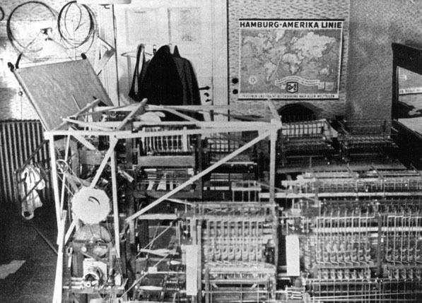

No version of an analytical engine was ever completed. Despite the failure to realize his ultimate dream, Babbage's plans alone distinguish himself as a man ahead of the times. He was almost too ahead of his times, as his plans didn't spark any more development in the field, but the innovations are nonetheless remarkable, and stand as an inspiration to computer visionaries today.
It was not until almost 160 years later that Babbage's "second difference engine" was finally manufactured. The first working version of this machine was built by the Science Museum in London, for the Babbage bicentenary in 1991. It can now be seen at the Museum; a second machine was then built for an American high-tech millionnaire, who put it in the Computer History Museum, in Mountain View, California. Babbage's analytical engines would have used "programmes" like those used in the textile industry to make complicated patterns; but they were never built.
First Programmable Computer: Z1
 https://cs.stanford.edu/people/eroberts/courses/soco/projects/1998-99/babbage/bio.htm